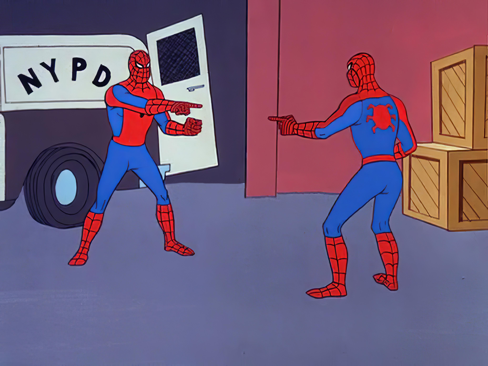

May 16, 2025
I am quite accountable to myself, but I am very accountable to others. Fortunate enough to have supportive friends around me, I have been able to use this feeling of accountability to a mutually beneficial advantage on many occasions. It has helped me achieve athletic goals, keep valuable habits, learn new skills, and build this website.
The name accountability buddy brightens up my day. To me, this is a person who is supporting you in an endeavour by checking in, offering feedback, and simply existing as someone who knows of your goals. I think this is a truly beautiful thing, which not only encourages personal growth, but strengthens comradery and community.
If you haven't yet, get yourself an accountability buddy.
I know this is a bastardisation of the Confused Spiderman meme, but in the moment this was giving me strong accountability buddy energy